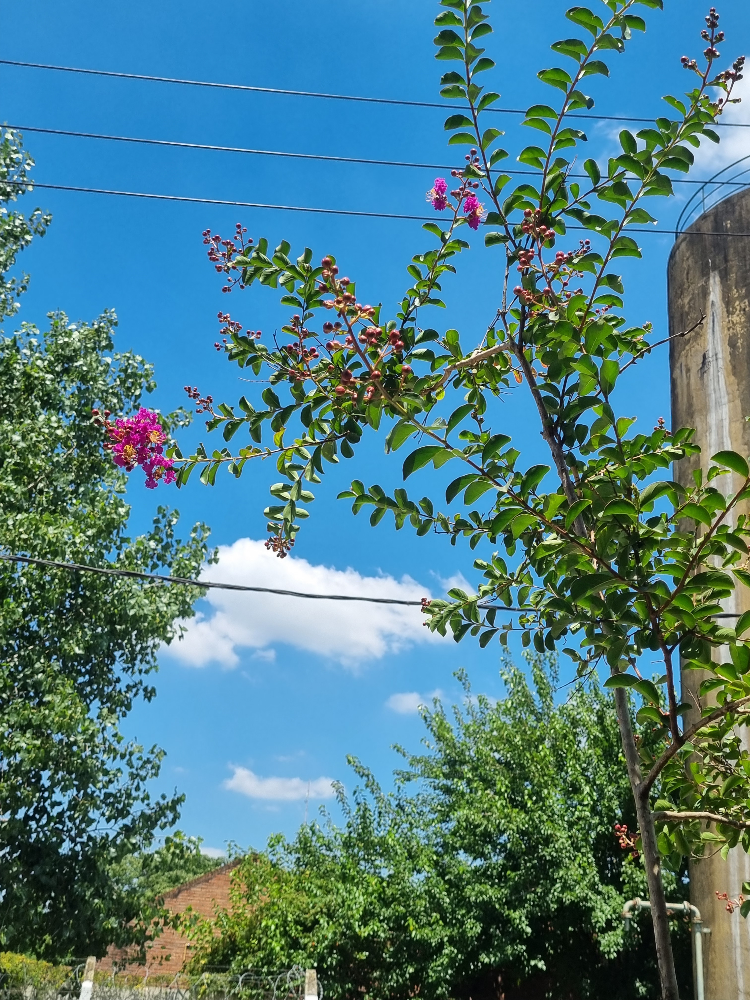

Hacia un Barrio El Zorzal Sustentable
Un plan estratégico para mitigar el cambio climático y mejorar la vida urbana en Marcos Paz.
Un plan estratégico para mitigar el cambio climático y mejorar la vida urbana en Marcos Paz.
Entendemos que los árboles no son meros adornos, sino sumideros de carbono fundamentales para nuestro ecosistema local.
Registro fotográfico del arbolado actual y ejemplares a plantar.

Monitoreo de Crecimiento

Análisis de Sanidad

Planificación de Veredas
Con una población estimada de 3,200 habitantes, el barrio El Zorzal requiere aproximadamente 1,100 árboles para alcanzar los estándares de bienestar de la OMS.
Tu conocimiento de la vereda es vital. Ayudanos a mapear el estado actual.
Sumar mi Sugerencia o Foto